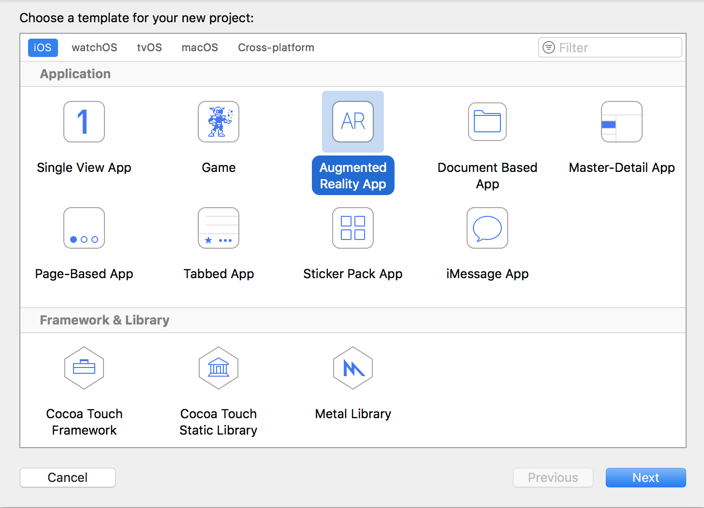
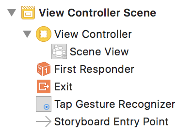

Tutorial: SceneKit Models and Physics
Note: This application builds on concepts learned in the ARKit Hello World tutorial.
Learning Objectives
- How to perform a hit test to determine plane collision
- How to render a 3D SceneKit model in ARKit
- How to apply physics to SceneKit models
Foreword: Software Life Cycle
Even with smaller applications, the software life cycle is crucial to developing and maintaining high-quality software. This tutorial encompasses only the programming process of the cycle.
Application Functionality
This is a universal application that will run on iPhone 6s and up and iPad Pro and up.
The tutorial teaches how to create a 3D SceneKit model, render it in augmented reality, and apply physics to the object in real time.
Creating the project
This project requires Xcode 9.0 and above.
- Launch Xcode and select Create a new Xcode project from the Xcode welcome screen, or select File → New → Project...
- Choose iOS → Application → Augmented Reality App and click next.
 - In the Choose options for your new project dialog, choose SceneKit as the Content
Technology

Configuring Your Environment
Creating a new ARKit project generates a sample application, so some cleanup is required.
- In ViewController.swift, delete the sample code from
viewDidLoad().
- Delete everything inside the art.scnassets folder.

Create a new AR Session using the technique learned in the ARKit Hello World tutorial. Follow the tutorial steps in order to start dynamically tracking horizontal planes. The rest of the tutorial assumes you have followed these steps.
Performing a Hit Test
When the user taps the screen in an AR application, ARKit records the 2D coordinates of the touch. In order to convert the 2D coordinates of the touch to real-world 3D coordinates, ARKit performs a "hit test." This test works as if the user's touch had fired a vector from the device's camera's origin through a 3D point created by projecting the 2D touch point into the 3D view. This 3D point is recorded.
If the 3D point lies on a detected horizontal plane, the hit test is a success. In this tutorial, we will use hit testing to allow the user to place 3D cubes in AR.
To create a hit test routine, first create a Tap Gesture Recognizer by opening your Main.storyboard and searching the Object library. Drag the Tap Gesture Recognizer object into your ViewController's Scene View. Your View Controller Scene should now look like this:
Next, open the Assistant Editor to your Main.storyboard and your ViewController.swift. Implement an action method that will be called when the Tap Gesture Recognizer is recognized.
Copy the documented code given below. Carefully study the code, understand what it is doing, and learn from it!
// MARK: - Gesture Handling Action methods
@IBAction func userTappedScreen(_ sender: UITapGestureRecognizer) {
// Get the 2D point of the touch in the SceneView
let tapPoint: CGPoint = sender.location(in: self.sceneView)
// Conduct the hit test on the SceneView
let hitTestResults: [ARHitTestResult] = sceneView.hitTest(tapPoint, types: .existingPlaneUsingExtent)
if hitTestResults.isEmpty {
return
}
// Arbitrarily pick the closest plane in the case of multiple results
let result: ARHitTestResult = hitTestResults[0]
// The position of the ARHitTestResult relative to the world coordinate system
// The 3rd column in the matrix corresponds the the position of the point in the coordinate system
let resultPositionMatrixColumn = result.worldTransform.columns.3
// Position the node slightly above the hit test's position in order to show off gravity later
let targetPosition: SCNVector3 = SCNVector3Make(resultPositionMatrixColumn.x, resultPositionMatrixColumn.y + /* insertion offset of ~50 cm */ 0.5, resultPositionMatrixColumn.z)
// This method is implemented in the next section of the tutorial.
addCubeAt(targetPosition)
}
Connect your action method to the gesture recognizer by holding the control key and dragging from the Tap Gesture Recognizer to your action method.
Adding 3D Virtual Content
In SceneKit, SCNGeometry objects can be attached to the previously-seen SCNNode objects to create realistic visuals. One of the simplest Geometry types is the SCNBox object: a "six-sided polyhedron geometry whose whose faces are all rectangles, optionally with rounded edges and corners." Basically, a cube.
To create a SCNBox, you must define the shape in terms of its width, height, and length. You must then apply the SCNBox to a SCNNode wrapper and place the SCNNode in the sceneView.
Copy the documented code given below. Carefully study the code, understand what it is doing, and learn from it!
// Adds a cube to the sceneView at the given position
func addCubeAt(_ position: SCNVector3) {
// .01 = roughly 10cm
let cubeGeometry: SCNBox = SCNBox.init(
width: 0.1, height: 0.1, length: 0.1, chamferRadius: 0)
// Node that the geometry is applied to
let cubeNode = SCNNode.init(geometry: cubeGeometry)
cubeNode.position = position
// Add the node to the scene
sceneView.scene.rootNode.addChildNode(cubeNode)
sceneView.autoenablesDefaultLighting = true
}
Now build and launch your application. Find a horizontal plane, and once it's detected, tap the screen and a cube will appear!

Physics Engine
SceneKit includes a realistic physics engine that "performs physics calculations on physics bodies attached to nodes in the scene." To tell SceneKit that it should apply physics to an object, you must attach a SCNPhysicsBody to your object.
Add the following code to your addCubeAt() method.
// Add Physics Body to the cube
let physicsBody: SCNPhysicsBody = SCNPhysicsBody(type: SCNPhysicsBodyType.dynamic, shape: nil)
physicsBody.mass = 2.0; // 2kg
cubeNode.physicsBody = physicsBody
Now your cubes will obey gravity, but they'll fall forever! In order to prevent this, you must set up collision detection.
Collision Detection
In order to have objects collide instead of pass through each other, each object must have a SCNPhysicsBody attached to it.
Add this following lines to your addCubeAt() method in order to give your cubes their
physics bodies
// Add Physics Body to the cube
let physicsBody: SCNPhysicsBody = SCNPhysicsBody(type: .dynamic, shape: SCNPhysicsShape(geometry: cubeGeometry, options: nil))
physicsBody.mass = 1.5; // 1.5kg
physicsBody.restitution = 0.25
physicsBody.friction = 0.75
cubeNode.physicsBody = physicsBody
Next, create a helper function to give your planes their physics bodies. This function will be used when the renderer detects a new plane and when it updates its size estimation of existing planes. Carefully study the code, understand what it is doing, and learn from it!
/**
Creates a new physics body for a plane SCNNode
*/
func createPlanePhysicsBody(forNode: SCNNode, anchor: ARPlaneAnchor) {
// Create a SCNBox the size of the plane, but 1cm high to prevent the cubes from clipping. SCNPlane has no height, so it is easily clipped through.
let planeGeometry = SCNBox(width: CGFloat(anchor.extent.x) , height: CGFloat(anchor.extent.z), length: 0.005, chamferRadius: 0)
// Give the plane a kinematic physics body so other nodes can interact with it, but it never moves and is unaffected by collisions
let physicsBody: SCNPhysicsBody = SCNPhysicsBody(type: .kinematic, shape: SCNPhysicsShape(geometry: planeGeometry, options: nil))
physicsBody.restitution = 0.0
physicsBody.friction = 1.0
forNode.physicsBody = physicsBody
}
Update your renderer(_ renderer: SCNSceneRenderer, didAdd node: SCNNode, for anchor:
ARAnchor) method to give your planes a physics body for the cubes to interact with. Carefully
study the code, understand what it is doing, and learn from it!
/**
Called when a new node is mapped to the passed in anchor
*/
func renderer(_ renderer: SCNSceneRenderer, didAdd node: SCNNode, for anchor: ARAnchor) {
// Place content only for anchors found by plane detection.
guard let planeAnchor = anchor as? ARPlaneAnchor else { return }
// Create a SceneKit plane to visualize the plane anchor using its position and extent.
let plane = SCNPlane(width: CGFloat(planeAnchor.extent.x), height: CGFloat(planeAnchor.extent.z))
let planeNode = SCNNode(geometry: plane)
planeNode.simdPosition = float3(planeAnchor.center.x, 0, planeAnchor.center.z)
// Give the SCNNode a texture from Assets.xcassets to better visualize the detected plane.
planeNode.geometry?.firstMaterial?.diffuse.contents = "grid.png" // NOTE: change this string to the name of the file you added
createPlanePhysicsBody(forNode: planeNode, anchor: planeAnchor)
/*
`SCNPlane` is vertically oriented in its local coordinate space, so
rotate the plane to match the horizontal orientation of `ARPlaneAnchor`.
*/
planeNode.eulerAngles.x = -.pi / 2
// Make the plane visualization semitransparent to clearly show real-world placement.
planeNode.opacity = 0.25
/*
Add the plane visualization to the ARKit-managed node so that it tracks
changes in the plane anchor as plane estimation continues.
*/
node.addChildNode(planeNode)
}
In addition, update the node's physics body when the plane estimation is updated in func renderer(_
renderer: SCNSceneRenderer, didUpdate node: SCNNode, for anchor: ARAnchor). Carefully study
the code, understand what it is doing, and learn from it!
/**
Called when the renderer updates its estimation of an existing node.
*/
func renderer(_ renderer: SCNSceneRenderer, didUpdate node: SCNNode, for anchor: ARAnchor) {
// Update content only for plane anchors and nodes matching the setup created in `renderer(_:didAdd:for:)`.
guard let planeAnchor = anchor as? ARPlaneAnchor,
let planeNode = node.childNodes.first,
let plane = planeNode.geometry as? SCNPlane
else { return }
// Plane estimation may shift the center of a plane relative to its anchor's transform.
planeNode.simdPosition = float3(planeAnchor.center.x, 0, planeAnchor.center.z)
/*
Plane estimation may extend the size of the plane, or combine previously detected
planes into a larger one. In the latter case, `ARSCNView` automatically deletes the
corresponding node for one plane, then calls this method to update the size of
the remaining plane.
*/
plane.width = CGFloat(planeAnchor.extent.x)
plane.height = CGFloat(planeAnchor.extent.z)
// Update the plane's physicsBody
createPlanePhysicsBody(forNode: planeNode, anchor: planeAnchor)
}
Your cubes will now interact with the planes and each other!

Saving Memory
You may have noticed in your testing that if a cube falls off of a plane, it seems to fall forever. Even after the cube is long out of sight, it is still in memory, and the physics engine still includes it in calculations every frame. This is undesirable, as if the user adds too many cubes, the device can run out of memory.
To prevent this, you can place a giant, invisible plane at the "bottom" of the world (think slightly below the ground). You can use a bitmask to detect which nodes collide, and if a cube collides with the bottom plane, you can remove it from memory to save resources.
To check which nodes are colliding, we will bitwise-AND each node's collision bit mask together and check the result against the two bitmasks bitwise-OR-ed together. Add the following two bitmasks below your class declaration.
let bottomCollisionBitMask = 1 << 0 // 001 = 1
let cubeCollisionBitMask = 1 << 1 // 010 = 2
Add these bitmasks to your objects. In setupWorldBottom() add
physicsBody.categoryBitMask = bottomCollisionBitMaskand in addCubeAt() add
physicsBody.categoryBitMask = cubeCollisionBitMaskTo use these bitmasks, the viewcontroller must implement the SCNPhysicsContactDelegate methods. Add the SCNPhysicsContactDelegate to your class declaration and implement the following function:
// MARK: - SCNPhysicsContactDelegate
/**
Tests if the cube collided with the bottom plane and removes it if true
*/
func physicsWorld(_ world: SCNPhysicsWorld, didBegin contact: SCNPhysicsContact) {
let mask = contact.nodeA.physicsBody!.categoryBitMask | contact.nodeB.physicsBody!.categoryBitMask
if mask == [bottomCollisionBitMask, cubeCollisionBitMask] {
if contact.nodeA.physicsBody!.categoryBitMask == CollisionTypes.bottom.rawValue {
contact.nodeB.removeFromParentNode()
} else {
contact.nodeA.removeFromParentNode()
}
}
}
Congratulations! You have completed the tutorial, and your implementation is now memory-efficient!